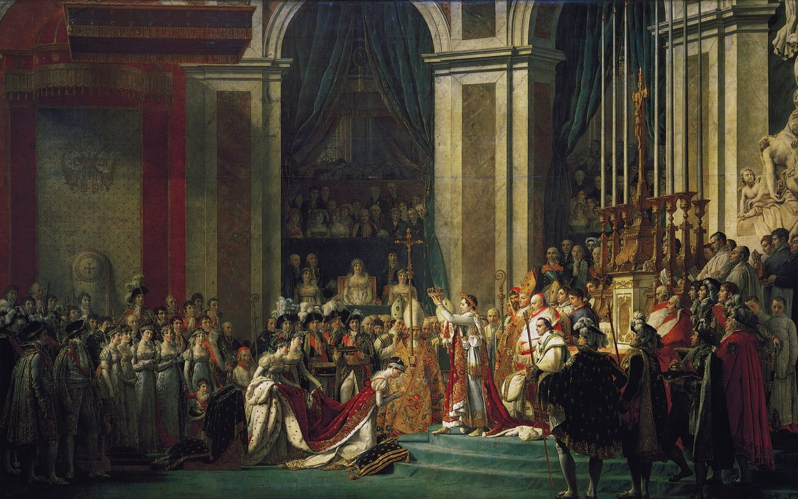

Hidden in the Frame · Louvre Museum, Paris
The Coronation of Napoleon
Jacques-Louis David · 1805–07 · Oil on canvas, 621 × 979 cm · Room 702 (Denon wing, level 1)

The story
On 2 December 1804 Napoleon crowned himself emperor in Notre-Dame – the pope had come all the way from Rome and got to watch. Then Napoleon placed the crown on his wife Joséphine. His court painter David was there and spent three years on this gigantic picture. At first he showed Napoleon crowning himself – then found that too provocative and painted Joséphine's coronation instead.
Details to look for
- Napoleon holds the crown high above the kneeling Joséphine. He is already crowned – with a golden laurel wreath like a Roman emperor. The moment he crowned himself can only be sensed as a faint trace under the paint.
- Pope Pius VII raises his hand in blessing. David had originally painted him with his hands in his lap. Napoleon is said to have remarked that he hadn't brought him so far to do nothing – so David had to raise the hand afterwards.
- In the central box, in the place of honour, sits Napoleon's mother Letizia. In reality she wasn't there at all: she had boycotted the ceremony, angry about a family quarrel. Napoleon wanted her in the picture anyway.
- Up in the gallery David painted himself with his family, drawing the scene. He vouches for the picture like a witness: I was there – even if he prettified a few things.
What it says
Not a photograph but widescreen propaganda: the picture shows not what happened, but what Napoleon wanted people to see.
Open the full guide – zoom, audio guide, German & Japanese →